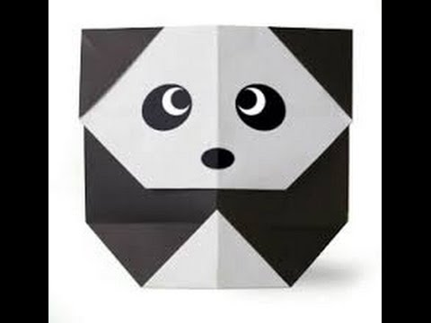

Origami Designs
About Us
Follow Us

Interesting Facts about Chameleons
- Chameleons have eyes in the backs of their heads
- Chameleons have extremely powerful tongues
- Chameleons take a while to hatch and don’t live very long

Interesting Facts about Teddy Bears
- Teddy bears got their name from the story that Teddy Roosevelt refused to shoot a bear cub while on a hunting trip in 1902.
- The first toy stuffed bear was created by German toymaker Margarete Steiff.
- The official term for a teddy bear collector is an ‘arctophile’.

Interesting Facts about Pandas
- Pandas are the most expensive animals to be kept in zoos or captivity.
- Pandas are actually bears.
- Unlike most other bears, pandas don’t hibernate.